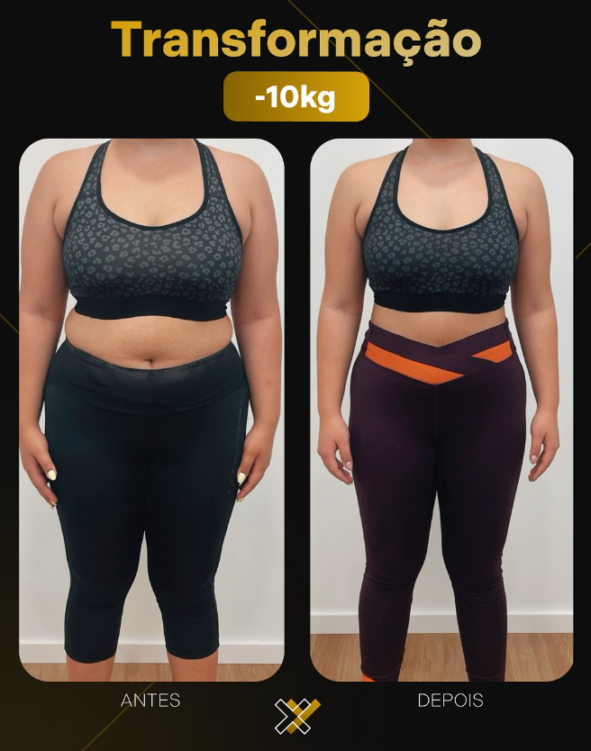
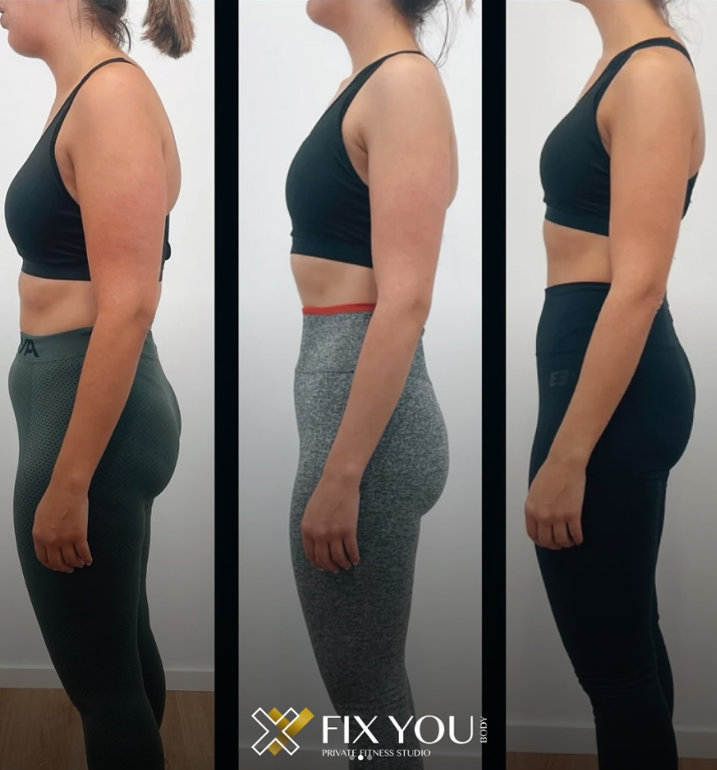

Transformações

Transformação da Elisabete✨
"Sinto-me melhor comigo mesma"
Mais uma transformação para inspirar-vos! A Elisabete, que decidiu investir em si mesma e mostrar do que é capaz. Com foco, dedicação e confiança no processo, ela transformou não só o corpo, mas também a autoestima e a qualidade de vida. Resultado de treinos consistentes, alimentação equilibrada e, claro, muito esforço! 💪 🚀
